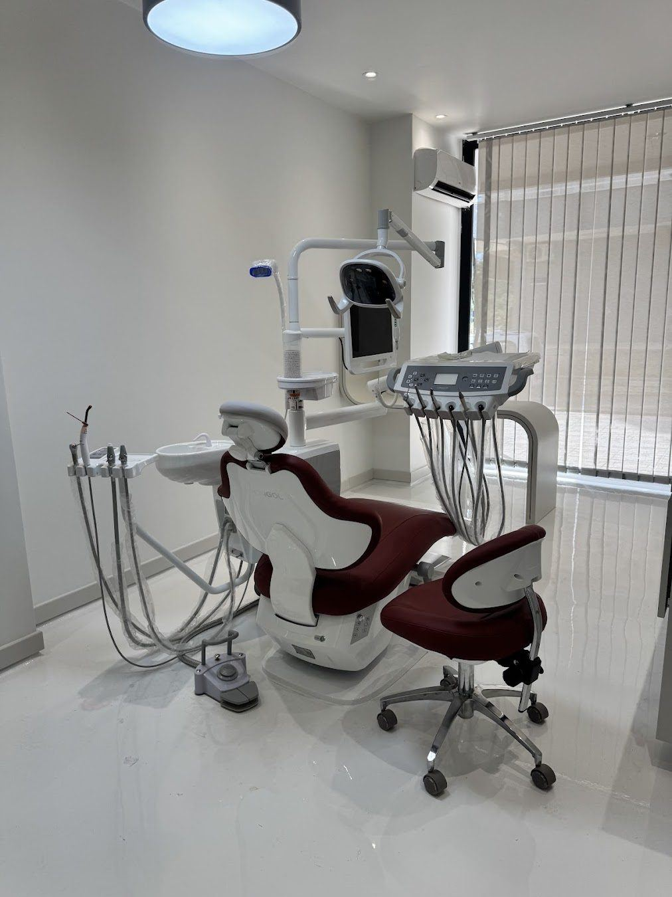
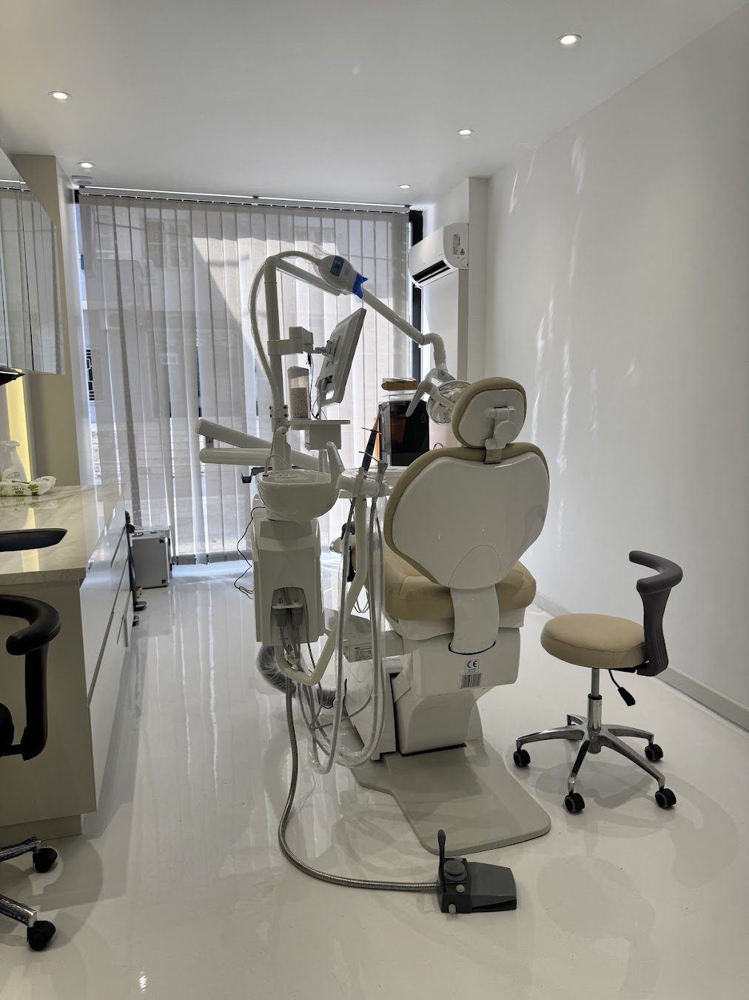

Yeni muayenehane, net bir tedavi planı
Duisburg Bulvarı'nda, haftanın altı günü randevulu diş hekimliği.


Tedavi seçenekleri
Muayene sonrası size uygun seçenekler birlikte değerlendirilir.
Estetik dolgu
Çürük dokunun temizlenmesinin ardından diş renginde kompozit dolgularla diş formu yeniden oluşturulur.
02Kanal tedavisi
İltihaplanan ya da hasar gören diş sinirinin temizlenip kanalların doldurulmasıyla diş ağızda korunur.
03Zirkonyum kaplama
Metal desteksiz, ışık geçirgenliği doğal dişe yakın kaplamalarla renk ve form düzenlenir.
04Diş beyazlatma
Muayenehane tipi ya da ev tipi uygulamalarla diş renginde birkaç ton açılma hedeflenir.
05Diş eti tedavileri
Diş eti kanaması, çekilmesi ve diş taşı temizliği gibi diş eti sağlığına yönelik tedaviler uygulanır.
06Diş çekimi ve cerrahi
Gömülü yirmi yaş dişleri ve tedavisi mümkün olmayan dişler için cerrahi işlemler planlanır.
Şikayetinize uygun tedavi
Yaşadığınız durumu seçin, size uygun olabilecek tedavi hakkında bilgi edinin.
İlk randevudan kontrollere
Her aşamada ne yapılacağını önceden bilirsiniz.
Muayene ve görüntüleme
Ağız içi muayene ve gerekli röntgenlerle mevcut durum birlikte değerlendirilir.
Tedavi planı
Seçenekler, süre ve aşamalar açıkça anlatılır, karar sizinle birlikte verilir.
Tedavi seansları
Planlanan işlemler randevulu ve sizi bekletmeyecek şekilde uygulanır.
Kontrol ve bakım
Tedavi sonrası düzenli kontrollerle sonuçların korunması takip edilir.
Size uygun bir saat bulalım
Formu doldurun ya da arayın, randevunuzu birlikte planlayalım.